CULTURA DE JAPON
Aspectos Importantes
En Japón, las interrelaciones personales están muy influenciadas por las ideas de deber, honor y obligación
, conjunto conocido como giri, y que representa una costumbre diferente
a la cultura individualista de las naciones occidentales. Las concepciones de conductas deseables
y moralidad
son menos practicadas en situaciones familiares, escolares y de amistad;
sin embargo, se observa una práctica más formal frente a superiores o gente desconocida.
Un aspecto que ha tenido un rol significante en la cultura japonesa es el idioma japonés. También se practica el nemawashi, que se refiere a la preparación cuidadosa y seria
de un proyecto, que refleja la armonía aceptada y respetada dentro de la cultura japonesa. Por otro lado, los japoneses poseen un sentido del humor intrincado y complicado, que se refleja
mucho en la cultura, la ética, el idioma y la religión, y que a veces es considerado como muy difícil de interpretar por otras culturas.
La Aspectos de la cultura japonesa en los que nos vamosa centrar son los siguientes:
Arte
Pintura
La crónica de las pinturas japonesas se inició en las cerámicas y en los murales pintados con sencillos diseños geométricos durante el período Jōmon. No obstante, su verdadero desarrollo ocurrió
en el etapa Heian, con el surgimiento del estilo yamato-e, que se destacó por obras con tonalidades fuertes realizadas sobre rollos de pergaminos conocidas como emaki, y caracterizadas por estar
acompañadas de textos de la literatura china.
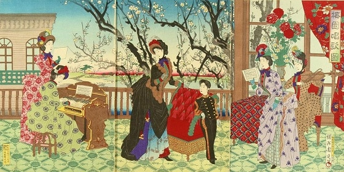
Seguidamente, en la era Muromachi, se enfatizaron los lienzos monocromáticos realizados en tinta china, los cuales fueron impulsados por los monjes zen mediante el estilo sumi-e, pero posteriormente,
en la etapa Edo, renacería el yamato-e con la aparición de la escuela de pintura decorativa Rinpa, que originó una corriente liderada por artistas como Ogata Kōrin, Tawaraya Sōtatsu y Honami Kōetsu.
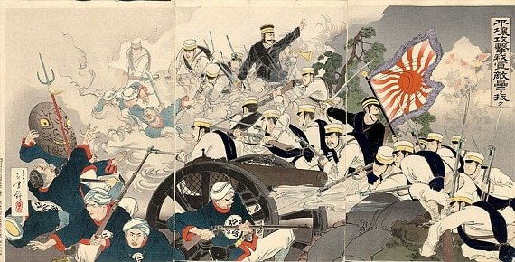
Tras una serie de cambios profundos que promovieron un enfoque occidental en el período Meiji, nació en la pintura de la cultura japonesa el estilo yōga, abarcando el óleo, las acuarelas, los tonos
pasteles, los dibujos de tinta, la litografía y el grabado, sin embargo, permitió la aparición de un género denominado nihonga que recuperaba las raíces niponas. A pesar de ello, en la era Taisho
predominó el yōga con nuevas técnicas del impresionismo, postimpresionismo y neoclasismo europeo, que finalmente fueron adquiridas por el nihonga, debilitando las diferencias entre ambas tendencias,
además, adoptando conceptos del arte puro y la pintura abstracta logró mantenerse hasta después de la postguerra. Así, en la época contemporánea las pinturas japonesas se enfocaron hacia los aspectos
de la vida urbana, reflejando luces parpadeantes, colores de neón y un fuerte abstraccionismo, volviéndose más realista en la década de los setenta, con estilos como el op y el pop de carácter vanguardista
e internacional.
Entre algunos pintores japoneses destacados, se encuentran personajes de la talla de Katsushika Hokusai, famoso por el grabado del paisaje Treinta y seis visitas del monte Fuji; Utamaro, conocido por
sus magistrales representaciones de mujeres llamadas bijinga; Tomioka Tessai, un gran pintor imperial que ejecutó obras como Los patriarcas de religiones remando juntos; y el mundialmente reconocido
Tsuguharu Foujita, así como un larga lista de virtuosos, que le dieron a las pinturas japonesas una proximidad entre la creación artística y una profunda intuición filosófica de la realidad
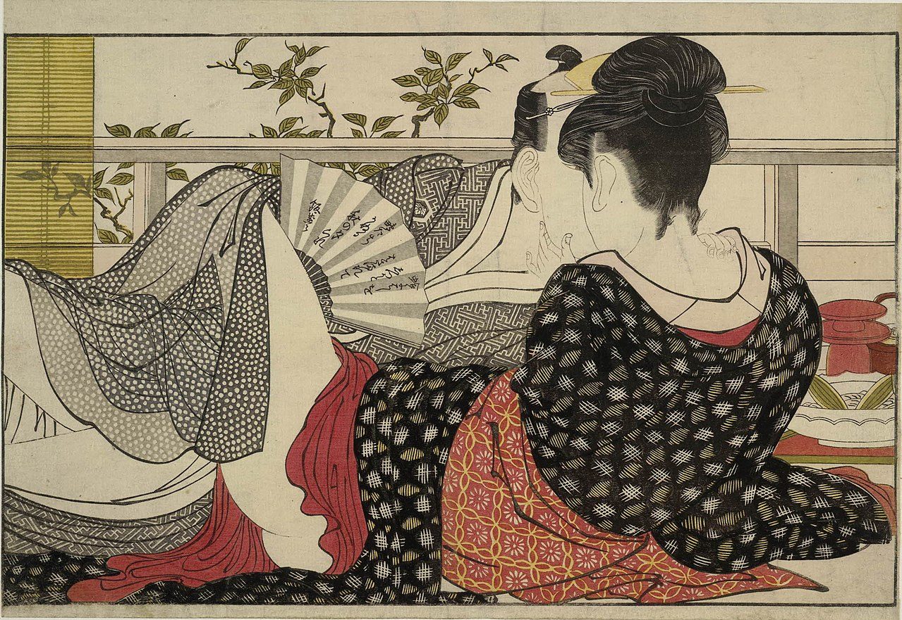
Escultura
Las esculturas de Buda casi monopolizan la historia de la escultura japonesa. Las estatuas de Buda se clasifican en general en cuatro tipos, Tathamon, Bodhisattva, Ming Ou y Cielo, y cada formato se
decide en gran medida a lo largo de cada época. Sin embargo, cuando se compara con el trabajo de cada era examinar cuidadosamente los cambios en la forma, la forma y la representación de cada época,
la gente de cada época pueden saber específicamente la belleza que se encuentra en el Buda, también de material de Ya Puedes ver que la expresión está cambiando por la técnica.
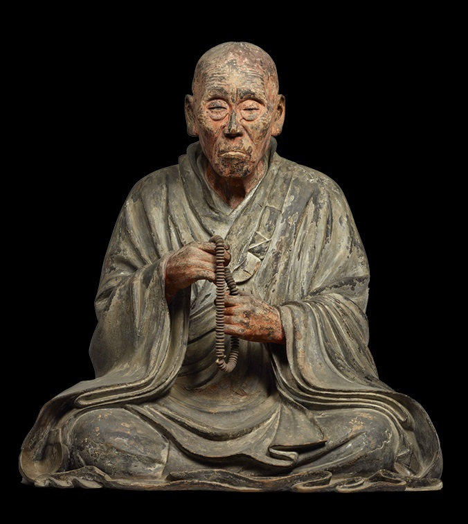
La escultura es una representación tridimensional de la imagen de un objeto mediante el grabado de talla de madera, piedra, tierra, metal y similares. O cavando grabados, figuras, etc. en esas superficies.
O ilustraciones producidas estereoscópicamente utilizando diversos materiales con el fin de la apreciación artística. También se refiere a su dominio de expresión. Describiré la escultura como una obra de
arte en el concepto de arte occidental a continuación.
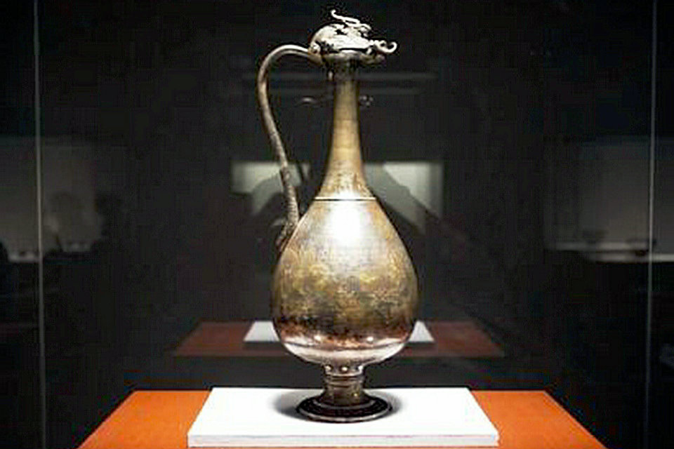
La técnica de grabado de material duro también se llama escultura (tallado), mientras que la técnica de colocar un material plástico para formar una forma se llama esculpir. A veces llamamos a las obras realizadas
por la escultura estatuas en particular. Los materiales utilizados son de piedra, madera, suelo, fieltro, yeso, papel, fibra, metal (hierro, cobre, etc.), resina, vidrio, cera, etc., en un amplio, también trabaja
a menudo combinan varios materiales. La escultura sujeto son objetos concretos tales como seres humanos y animales familiares (esculturas de hormigón) es igual o siglo 20, una representación de (escultura abstracta) mental,
ahora también se produce a menudo.
Ceramica
Los orígenes de la cerámica japonesa se remontan a hace 13.000 años, concretamente, al período Jōmon, época en la que nació el homónimo estilo. Las peculiares formas que lo caracterizan, así como el misterio que lo rodea
y el vigor que transmiten sus piezas, han motivado que se vuelva a reflexionar sobre su significado.
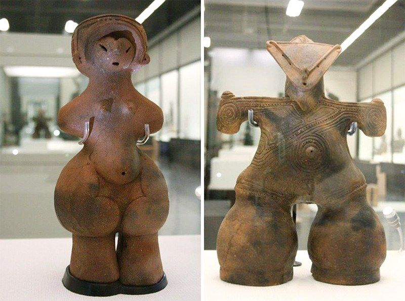
La cerámica japonesa, cuya elaboración consiste en darle forma a la arcilla o a piedras que contienen cristales, se puede dividir en dos grandes categorías: la cerámica y la porcelana. En la primera de ellas, las principales
materias primas son el barro y la arcilla, y de su cocción se obtiene un producto suave y grueso. En la segunda, sin embargo, se emplean materiales como el cuarzo y el feldespato, que se mezclan con la arcilla, de ahí que el
resultado sea más sólido, detallado y delgado. Las distintas formas de decorar las piezas determinan el estilo: con dibujos, esmaltada, pincelada, peinada, cepillada.
En el período Muromachi (siglos XIV y XV), el maestro Sen no Rikyū llevó la ceremonia del té al máximo nivel. Esto motivó la elaboración de piezas de cerámica únicas de Japón que utilizar durante este tipo de celebración y
como elemento decorativo —floreros—; destacan, entre otras, las de la casa Raku y las de cerámica de Oribe. Los generales de Kyūshū que formaban parte de las tropas enviadas a Corea por Toyotomi Hideyoshi entre 1592 y 1598,
regresaron a Japón con alfareros coreanos que construyeran hornos donde hacer más cerámica para el té.
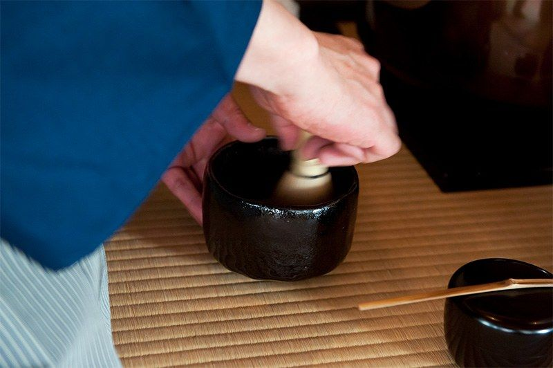
Arquitectura
Periodo Kamakura
Otro desarrollo principal del período era la ceremonia del té y la casa en la cual fue sostenido. El objetivo de la ceremonia es el de pasar el tiempo con los amigos quienes disfrutan de las artes, limpian la mente de
las preocupaciones de vida diaria, y reciben un tazón de té servido de una manera graciosa y con buen gusto. El estilo rústico de la casita de campo rural fue adoptado para la casa de té, acentuando materiales naturales
como los troncos cubiertos por corteza y la paja tejida.
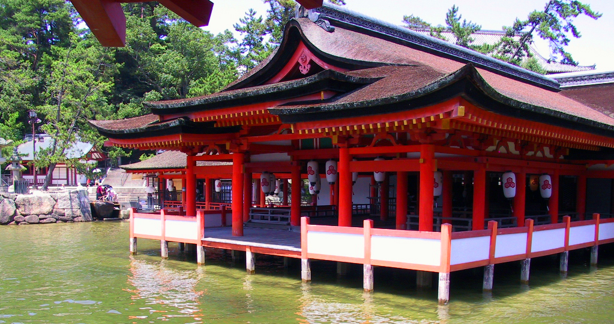
Periodo Azuchi-Momoyama / Periodo Sengoku
Dos nuevas formas de arquitectura fueron desarrolladas en respuesta al cima militarista de la época: el castillo, una estructura defensiva construida como casa de un señor feudal y sus soldados en tiempos de problemas;
y el shoin, un pasillo de recepción y área de estudio privado diseñada para reflejar las relaciones de señor y vasallo dentro de la sociedad feudal. El Castillo de Himeji (construido en su forma actual en 1609),
corrientemente conocido como el Castillo de Garza Blanco
, con sus graciosas azoteas de encorvadura y su complejo de tres torres subsidiarias alrededor del tenshu principal, es una de las estructuras más hermosas
del período Momoyama. El Ohiroma del Castillo Nijō (del siglo XVII) en Kioto es uno de los ejemplos clásicos del shoin, con su tokonoma (el nicho), la ventana shoin (pasando por alto un muy bien cuidado jardín donde relajarse),
y áreas claramente diferenciadas para los señores Tokugawa y sus vasallos.
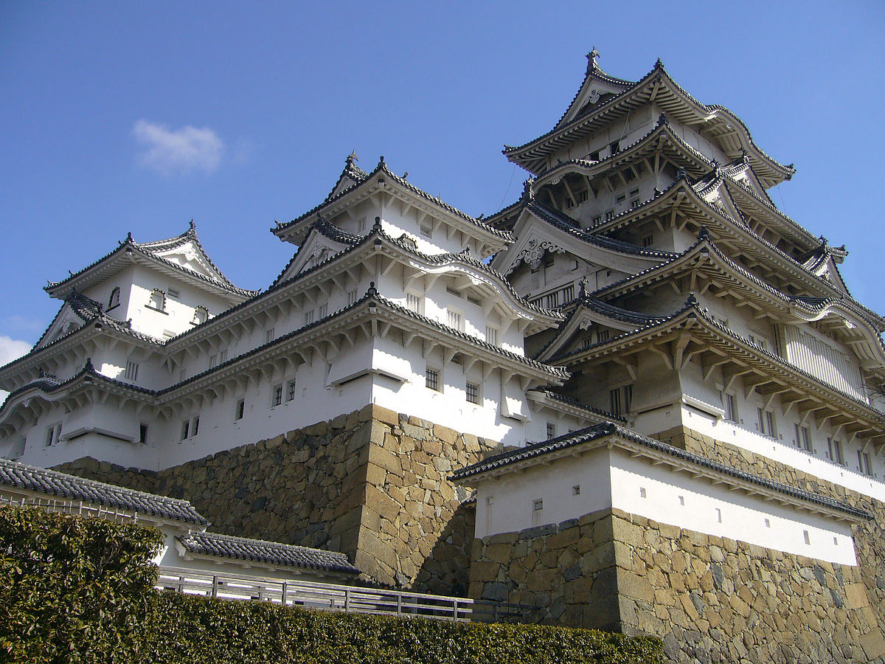
Arquitectura Moderna
Como en tantos otros aspectos de la cultura y sociedad japonesa, el salto que la tecnología moderna trajo se notó también, de forma notable, en la arquitectura. La necesidad de reconstruir Japón después de la
Segunda Guerra Mundial supuso un gran estímulo para la arquitectura japonesa. Ello supuso que muchos edificios contemporáneos japoneses estén a un nivel altísimo en el mundo en términos de tecnología y en su concepción formal.
Uno de los arquitectos japoneses más conocidos es Kenzō Tange, cuyos Gimnasios Nacionales (1964) para las Olimpiadas de Tokio que acentúan el contraste y la mezcla de pilares y paredes, con azoteas amplias y evocadoras de la
tomo-e (un antiguo símbolo heráldico formado por una voluta) son declaraciones dramáticas de la forma y el movimiento.
Con la introducción de técnicas constructivas, materiales y estilos desde el Oeste en el Japón Meiji, nuevas estructuras de hormigón y acero fueron construidas en fuerte contraste con la arquitectura tradicional japonesa.
Japón jugó algún papel en el diseño de los modernos rascacielos, debido a su larga familiaridad con el principio de cantilever para apoyar el peso de pesadas azoteas de templo embaldosadas. Frank Lloyd Wright fue fuertemente
influido por las disposiciones espaciales japonesas y su concepto de interpenetrar el espacio exterior e interior, alcanzado mucho tiempo atrás en Japón con paredes que se abren hechas de puertas que se deslizan.
A finales del siglo XX, sin embargo, sólo en la arquitectura doméstica y religiosa era el estilo tradicional japonés comúnmente empleado. Las ciudades se irguieron con rascacielos modernos reflejando una asimilación total y
occidentalización de la arquitectura japonesa. Esto lo vemos claramente en el horizonte occidentalizado de la ciudad de Tokio.
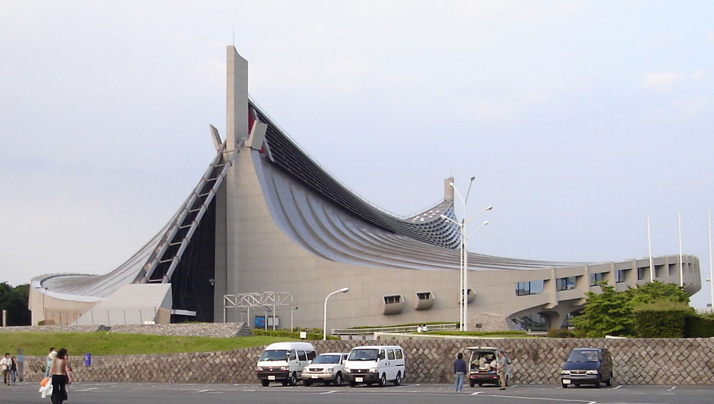
Vestimenta
Kimono
El kimono es el vestido tradicional japones llevado para su uso común hasta los primeros años de la posguerra. El término mono significa cosa
y ki viene de kiru, llevar
. Hoy en día la mayoría de los japoneses utiliza
ropa occidental pero se visten con kimonos en eventos como bodas, ceremonias o festivales tradicionales. Los accesorios para acompañar al kimono son los geta (sandalias de madera) o los zori (sandalias bajas hechas de algodón
y cuero) y los tabi son calcetines tradicionales que separan el dedo pulgar del resto de los dedos para calzar la sandalia.
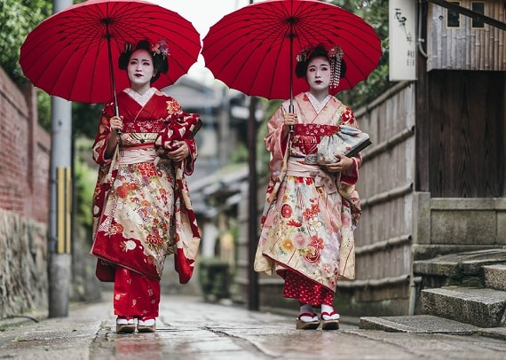
Yukata
la yukata es otra de las típicas indumentarias de los nipones, que se utiliza principalmente durante las festividades del verano, ya que al ser confeccionada en algodón suele ser muy ligera, caracterizándose por sus cortes
rectos, mangas anchas cortas y colores serios para el hombre, en cambio, los tonos son más llamativos para las mujeres, que la combinan con un obi, un abanico y un tipo de bolso llamado kinchaku, que es utilizado para portar
pequeños artículos personales.
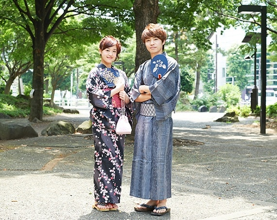
Otros tipos
Complementariamente, hay una serie de vestimenta japonesa que se usa para alguna actividad específica, entre las que se encuentran:
Keikogi: es el común uniforme de entrenamiento para las artes marciales como el judo, el karate, el kendo o el ninjutsu.
Jūnihitoe: se trata de un elegante kimono que era usado por las damas de la corte de Japón, que hoy en día es utilizado para ocasiones muy especiales por la familia imperial, debido a que es uno de los artículos más costosos
del vestuario nipón.
Hakama: eran los pantalones empleados por los samurais y confeccionados en telas gruesas para proteger sus piernas, sin embargo, en el presente se fabrican en telas finas y colores como el negro, azul índigo o gris, destacándose
por su corte bombache con pliegues por delate y por detrás.
Jinbei: aunque suelen ser utilizados como prendas para dormir, últimamente es un ropaje muy consumido durante el verano, que consiste en un conjunto de camisa y pantalones que varían de largo a corto.
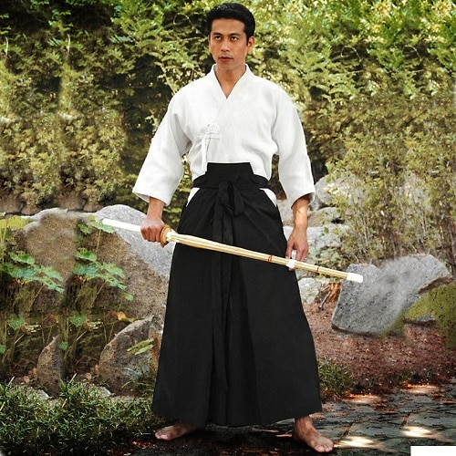